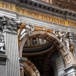
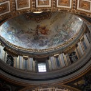
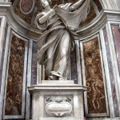
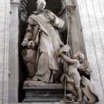

<?xml version="1.0" encoding="UTF-8"?>
<rss version="2.0"
	xmlns:content="http://purl.org/rss/1.0/modules/content/"
	xmlns:wfw="http://wellformedweb.org/CommentAPI/"
	xmlns:dc="http://purl.org/dc/elements/1.1/"
	xmlns:atom="http://www.w3.org/2005/Atom"
	xmlns:sy="http://purl.org/rss/1.0/modules/syndication/"
	xmlns:slash="http://purl.org/rss/1.0/modules/slash/"
	>

<channel>
	<title>Chronosynclastic Infundibulum &#187; bernini</title>
	<atom:link href="http://www.semanticoverload.com/tag/bernini/feed/" rel="self" type="application/rss+xml" />
	<link>http://www.semanticoverload.com</link>
	<description>The world through my prisms</description>
	<lastBuildDate>Thu, 07 Apr 2011 17:36:17 +0000</lastBuildDate>
	<language>en-US</language>
	<sy:updatePeriod>hourly</sy:updatePeriod>
	<sy:updateFrequency>1</sy:updateFrequency>
	<generator>http://wordpress.org/?v=3.5</generator>
		<item>
		<title>Visiting Vatican: A Picture Gallery</title>
		<link>http://www.semanticoverload.com/2010/07/31/visiting-vatican-a-picture-gallery/</link>
		<comments>http://www.semanticoverload.com/2010/07/31/visiting-vatican-a-picture-gallery/#comments</comments>
		<pubDate>Sun, 01 Aug 2010 01:48:33 +0000</pubDate>
		<dc:creator>Semantic Overload</dc:creator>
				<category><![CDATA[photo]]></category>
		<category><![CDATA[religion]]></category>
		<category><![CDATA[travel]]></category>
		<category><![CDATA[bernini]]></category>
		<category><![CDATA[micheangelo]]></category>
		<category><![CDATA[st. peters]]></category>
		<category><![CDATA[Vatican]]></category>

		<guid isPermaLink="false">http://www.semanticoverload.com/?p=488</guid>
		<description><![CDATA[I was in Rome last year. Here are select photographs from my visit to the Vatican.]]></description>
				<content:encoded><![CDATA[<p>I was in Rome last year. Here are select photographs from my visit to the Vatican.<br />

				<script type='text/javascript'>
					var flashvars = {};
					flashvars.file = 'http://www.semanticoverload.com/wp-content/plugins/wordpress-gallery-slideshow/org/myplugins/slideshow/getxml.php?attr=id^488#';
					
					flashvars.rotatetime = '5';
					flashvars.autostart = 'false';
					flashvars.backcolor = '0xFFFFFF';
					flashvars.frontcolor = '0x000000';
					flashvars.lightcolor = '0x000000';
					flashvars.screencolor = '0x000000';
					flashvars.screenalpha = 'false'
					flashvars.logo = '';
					flashvars.transition = 'fade';
					flashvars.shuffle = 'false';
					flashvars.overstretch = 'false';
					flashvars.shownavigation = 'true';
					flashvars.height = '480';
					flashvars.width = '640';
					var params = {};
					params.allowFullScreen = 'true';
					params.wmode = 'transparent';
					params.menu = 'false';
					var attributes = {};
					swfobject.embedSWF ('http://www.semanticoverload.com/wp-content/plugins/wordpress-gallery-slideshow/org/myplugins/slideshow/imagerotator.swf', 'slideshow_1', '640', '480', '9.0.0', false, flashvars, params, attributes);
				</script>
				<div class='slideshow' id='slideshow_1'>
					
<a href='../../../2010/07/31/visiting-vatican-a-picture-gallery/img_1569/index.html' title='St. Peter&#039;s Square complete with a vandalized piece of Egyptian heritage '></a>
<a href='../../../2010/07/31/visiting-vatican-a-picture-gallery/img_1577/index.html' title='Dome 1'></a>
<a href='../../../2010/07/31/visiting-vatican-a-picture-gallery/img_1578/index.html' title='Nauseating Opulence'></a>
<a href='../../../2010/07/31/visiting-vatican-a-picture-gallery/img_1581/index.html' title='One of the Domes of St. Peter&#039;s Basilica'></a>
<a href='../../../2010/07/31/visiting-vatican-a-picture-gallery/img_1584/index.html' title='The third dome of St. Peter&#039;s'></a>
<a href='../../../2010/07/31/visiting-vatican-a-picture-gallery/img_1587/index.html' title='I&#039;ll bet this is how they dupe believers into seeing the &#039;divinity&#039; of the Vatican'></a>
<a href='../../../2010/07/31/visiting-vatican-a-picture-gallery/img_1594/index.html' title='The artistic excellence on showcase is unparalleled'></a>
<a href='../../../2010/07/31/visiting-vatican-a-picture-gallery/img_1595/index.html' title='Yes, that&#039;s granite fashioned to show folds of a fabric!'></a>
<a href='../../../2010/07/31/visiting-vatican-a-picture-gallery/img_1598/index.html' title='Love the light'></a>
<a href='../../../2010/07/31/visiting-vatican-a-picture-gallery/img_1600-1/index.html' title='St. Veronica - 1'></a>
<a href='../../../2010/07/31/visiting-vatican-a-picture-gallery/img_1601/index.html' title='Here&#039;s another example of Bernini&#039;s genius! Looks at how he has fashioned marble to show the folds of the fabric worn by St. Veronica'></a>
<a href='../../../2010/07/31/visiting-vatican-a-picture-gallery/img_1603/index.html' title='IMG_1603'></a>
<a href='../../../2010/07/31/visiting-vatican-a-picture-gallery/img_1606/index.html' title='IMG_1606'></a>
<a href='../../../2010/07/31/visiting-vatican-a-picture-gallery/img_1608/index.html' title='IMG_1608'></a>
<a href='../../../2010/07/31/visiting-vatican-a-picture-gallery/img_1614/index.html' title='IMG_1614'></a>
<a href='../../../2010/07/31/visiting-vatican-a-picture-gallery/img_1615/index.html' title='IMG_1615'></a>
<a href='../../../2010/07/31/visiting-vatican-a-picture-gallery/img_1616/index.html' title='IMG_1616'></a>

				</div>
				
<br />
<span id="more-488"></span>	<div class='gallery' id='gallery_2'>
							
<a href='../../../2010/07/31/visiting-vatican-a-picture-gallery/img_1569/index.html' title='St. Peter&#039;s Square complete with a vandalized piece of Egyptian heritage '></a>
<a href='../../../2010/07/31/visiting-vatican-a-picture-gallery/img_1577/index.html' title='Dome 1'></a>
<a href='../../../2010/07/31/visiting-vatican-a-picture-gallery/img_1578/index.html' title='Nauseating Opulence'></a>
<a href='../../../2010/07/31/visiting-vatican-a-picture-gallery/img_1581/index.html' title='One of the Domes of St. Peter&#039;s Basilica'></a>
<a href='../../../2010/07/31/visiting-vatican-a-picture-gallery/img_1584/index.html' title='The third dome of St. Peter&#039;s'></a>
<a href='../../../2010/07/31/visiting-vatican-a-picture-gallery/img_1587/index.html' title='I&#039;ll bet this is how they dupe believers into seeing the &#039;divinity&#039; of the Vatican'></a>
<a href='../../../2010/07/31/visiting-vatican-a-picture-gallery/img_1594/index.html' title='The artistic excellence on showcase is unparalleled'></a>
<a href='../../../2010/07/31/visiting-vatican-a-picture-gallery/img_1595/index.html' title='Yes, that&#039;s granite fashioned to show folds of a fabric!'></a>
<a href='../../../2010/07/31/visiting-vatican-a-picture-gallery/img_1598/index.html' title='Love the light'></a>
<a href='../../../2010/07/31/visiting-vatican-a-picture-gallery/img_1600-1/index.html' title='St. Veronica - 1'></a>
<a href='../../../2010/07/31/visiting-vatican-a-picture-gallery/img_1601/index.html' title='Here&#039;s another example of Bernini&#039;s genius! Looks at how he has fashioned marble to show the folds of the fabric worn by St. Veronica'></a>
<a href='../../../2010/07/31/visiting-vatican-a-picture-gallery/img_1603/index.html' title='IMG_1603'></a>
<a href='../../../2010/07/31/visiting-vatican-a-picture-gallery/img_1606/index.html' title='IMG_1606'></a>
<a href='../../../2010/07/31/visiting-vatican-a-picture-gallery/img_1608/index.html' title='IMG_1608'></a>
<a href='../../../2010/07/31/visiting-vatican-a-picture-gallery/img_1614/index.html' title='IMG_1614'></a>
<a href='../../../2010/07/31/visiting-vatican-a-picture-gallery/img_1615/index.html' title='IMG_1615'></a>
<a href='../../../2010/07/31/visiting-vatican-a-picture-gallery/img_1616/index.html' title='IMG_1616'></a>

						</div>
						
</p>
]]></content:encoded>
			<wfw:commentRss>http://www.semanticoverload.com/2010/07/31/visiting-vatican-a-picture-gallery/feed/</wfw:commentRss>
		<slash:comments>0</slash:comments>
		</item>
	</channel>
</rss>
